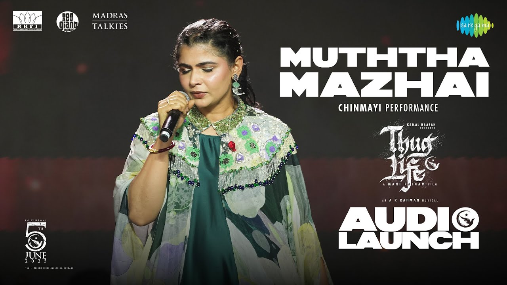
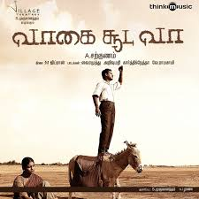

"Singing is the art of touching hearts with invisible strings"
Chinmayi Sripada is a versatile Indian singer known for her work in playback singing, voice acting, and music direction.(Muthumalai) refers to a song titled "Muththa Mazhai" which was performed by Chinmayi Sripaada during the audio launch of the movie "Thug Life". Although the song in the movie was sung by Dhee, Chinmayi's live rendition received significant attention and applause.
She also won a SIIMA Award for the song "Sara Sara" from Vaagai Sooda Vaa. The song "Sara Sara Saara Kaathu" from the movie "Vaagai Sooda Vaa" garnered several awards and nominations. Chinmayi won the Chennai Times Film Award for Best Singer (Female) for her rendition.
